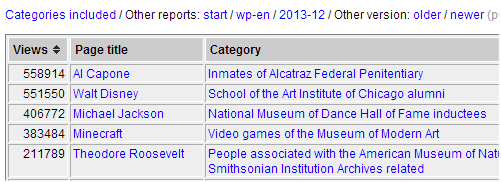
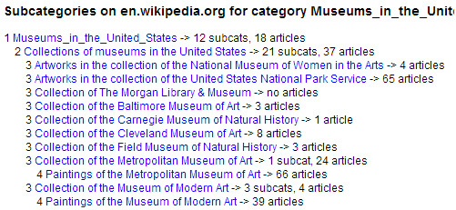
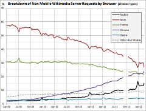
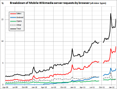
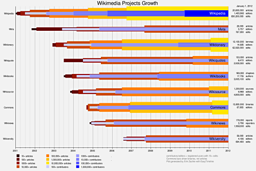

| |
Wikimedia Statistics |
Monthly New Report Card
A compact overview over recent trends. | |
Statistics per Wikimedia project
Detailed trends for each project.
| ||||||||||||||||||||||||||||||||||||||||||||||||||||||||||||||||||||||||||||||||||||||||||||||||||||||||||||||||||||||||||||||||||||||||||||||||||||||||||||||||||||||||||||||||||||||||||||||||||||||||||||||||||||||
Legend: hosted by WMF, by Toolserver on Wikipedia external link
Most popular topics:
Page views: stat.grok.se, WikiViewStats, WikiTrends
Summaries for all wikis
Page views per project / wiki
Page views / edits per country / language
Server requests
Further topics:
Edits & Reverts -
Traffic Surges - User Feedback
Bot Activity - Mailing Lists -
Creation History -
Recent Months - Current Status
Dumps - Categories - Wikibooks - Book Tool
Growth Per Language (animation) -
Growth Per Project (static diagram)
Examples of traffic surges
TOC works in progress: to be extended

Many authors
comScore: unique visitors / reach
page views: all projects / mobile site
editors: new / active editors / very active editors
content: total articles / new articles / binaries on commons
edits: edits
Author David Schoonover, Dan Andreescu
Wikipedia |
Commons |
Wikidata |
Wikivoyage |
Wiktionary |
Wikibooks | |||||||||||||||||||||||||||||||||||||||||||||||||||||||||||||||||||||||||||||||||||||||||||||
Wikinews |
Wikiquote |
Wikisource |
Wikiversity |
|
Other Projects | |||||||||||||||||||||||||||||||||||||||||||||||||||||||||||||||||||||||||||||||||||||||||||||
Author Erik Zachte
Article views per month or year, based on dammit.lt files
Author Henrik
Note: it is possible to request data in json format (structured data for use in other tools,
each month is represented by an array of 32 values starting with a 0)
For yearly stats remove month number manually from url.
See also this extensive FAQ
Article view/edit metrics, mainly based on dammit.lt files
Bar and line charts. Time period can be adjusted. User interface in many languages.
Many namespaces are supported. All Wikimedia projects and languages are supported.
Searches can be saved. Own contributions can be analyzed. Patrol/review logs can be analyzed.
Articles can be shown ranked by popularity.
View trends for different articles can be compared, even between projects and languages
See also full list of features
Author Hedonil, see also team page
Article views per month or year, based on dammit.lt files
Trend lines for several articles can be shown in one chart
Time period covered can be adjusted
Total pageviews presented for any article include hits for its redirects
Linear, logarithmic and normalized vertical scales are possible.
Only English Wikipedia is supported (March 2014)
Authors Alex Druk and Sergey Chernyshev
Summary reports contain a table with basic metrics for one wiki, plus yearly and monthly changes.
Also the following trends are charted: total articles, new articles, active editors, page views.
There are sets of summaries per project:
Wikipedia, Wiktionary, Wikibooks, Wikinews, Wikiquote, Wikiversity, Wikisource and Other Projects.
For Wikipedia there are also sets of summaries per region:
Africa, America’s, Asia, Europe, India, Oceania, and also for Artificial Languages.
For every wiki there is also a link to its summary report in the project sitemaps:
Wikipedia, Wiktionary, Wikibooks, Wikinews, Wikiquote, Wikiversity, Wikisource and Other Projects.
Author Erik Zachte
For each Wikimedia project there are tables with monthly page views, one column per language
preceded by a column with project-wide totals (Σ). These huge tables make take a while to load.
Cells are color coded to show month-over-month change. Green: positive, Red: negative.
Wikibooks, Wikinews, Wikipedia, Wikiquote, Wikisource, Wikiversity, Wikispecial, Wiktionary
Also Totals for all projects combined, Wikipedia main site only, Wikipedia mobile site only

Author Erik Zachte
These reports are based on our traffic logs. Page views and page edits are geo-located,
by looking up ip addresses.
The 'per country overview' reports present totals, either views or edits, on four different levels:
1:worldwide, 2:global north and south, 3:continent and 4:country.
The 'per language overview' report shows per language from which countries most page views
or edits have been received.
Wikipedia Page Views / Page Edits per Country - Overview
Wikipedia Page Views / Page Edits per Country - Breakdown
Wikipedia Page Views / Page Edits per Country - Trends
Wikipedia Page Views / Page Edits per Language - Breakdown

Author Erik Zachte
 Page Views Absolute |
 Page Views Relative |
Author Erik Zachte
These reports are run intermittently for a select set of topics in a select set of languages
(as a precursor to the generalized page views api which would be agnostic about audience
and topic).
Above the table with page views you can find links to navigate to other languages,
months, topics.
|  Page views by category |
|  Categories included |
Author Erik Zachte
This analysis is based on a traffic logs (aka squid logs)
Note: WMF stores one in thousand log lines for a limited period, hence read all counts x 1000.
Topics:

|  Non-Mobile Browsers |
 Mobile Browsers |
Author Erik Zachte
Tables show edits and revert counts for registered and anonymous users, and bots
Charts show edit trends per language project, for same three classes of editors
plus revert trend for all classes combined
Tables and charts listed here link to more detailed pages, with extensive edit and
revert stats per language project, like this one for the English Wikipedia
Wikipedia
Table &
Charts
/ Wikibooks
Table &
Charts
/ Wikinews
Table &
Charts
Wikiquote
Table &
Charts
/ Wikisource
Table &
Charts
/ Wikiversity
Table &
Charts
Wiktionary
Table &
Charts
/ Other projects
Table &
Charts

Author Erik Zachte
Moodbar, total daily posts, also breakdown by editor class
Wikilove, daily messages
Article Feedback Trend, daily ratings, also ratings per page view
Article Feedback per Article
Author Dario Taraborelli
Wikibooks, Wikinews, Wikipedia, Wikiquote, Wikisource, Wikiversity, Wikispecial, Wiktionary

Author Erik Zachte
Which Wikimedia mailing lists are frequently updated?
Which Wikimedia editors are most active and where ?

Author Erik Zachte
Wikibooks, Wikinews, Wikipedia, Wikiquote, Wikisource, Wikiversity, Wikispecial, Wiktionary

Author Erik Zachte
Wikibooks, Wikinews, Wikipedia, Wikiquote, Wikisource, Wikiversity, Wikispecial, Wiktionary

Author Erik Zachte
Wikibooks, Wikinews, Wikipedia, Wikiquote, Wikisource, Wikiversity, Wikispecial, Wiktionary

Author Erik Zachte
These animations are pure javascript (html 5, canvas object) and require a modern browser
For other browsers there is a Flash recording
Wikibooks, Wikinews, Wikipedia, Wikiquote, Wikisource, Wikiversity, Wikispecial, Wiktionary


Author Erik Zachte
Basic stats on lots of Mediawiki wikis, very recent data
Author User:Mutante


Article views per day, week, month or year, based on dammit.lt files
Author Pete Skomoroch (Data Wrangling)

Author Alexa
Search volume, annotated with major events, by Google
Author Google

Author WikiChecker.com

Rankings, Sortable tables with core metrics
Author Many wikipedians

Author Many wikipedians
Mouse-over a cluster name to see the hosted wikis, Click a host to get ganglia graphs.
Interactive treemap visualizes breakdown of German Wikipedia by category.
Colors are based on number of articles or page views per category.

Author Björn Höhrmann
For archives of donated images on Commons:

Author Magnus Manske (see also other toys'n'tools by Magnus)
Flexible, up to date pageview stats, for articles or files (primarily images on Commons)
which belong to some custom grouping of categories.
Author Magnus Manske (see also other toys'n'tools by Magnus)
Geotagged articles are mapped to country, land mass (shown) or population size.

Geotagged articles in United Kingdom mapped to district, square kilometer or person (shown).

Author Mark Graham
Anonymous edits per day/hour for any month

Author user Krinkle (see also many other tools by Krinkle)
Popular pages per WikiProject
Author: Mr.Z-man
Quality / Importance assessments per WikiProject
Author: Mr.Z-man
Very concise status overview of monthly dump creation or processing for 800+ wikis.
See also: Dump processing progress
Concise report |
Original report |
Author Erik Zachte
Number of pages which have been proofread using the ProofreadPage
extension, at various Wikisource subdomains. It is updated daily.

Author ThomasV
Rankings (by size, edits, authors and chapter counts), Tables of Content, Chapter Sizes

Author Erik Zachte
Frontend: Page Load Timing: User-perceived Page Load Times
MediaWiki: API Methods
MediaWiki: Article Methods: MediaWiki Article Class Metrics
MediaWiki: Data Stores: High Level Access to Data Stores (core mysql, external store, memcached)
MediaWiki: EditPage Methods: MediaWiki EditPage Class Metrics
MediaWiki: FileBackendStore: MediaWiki FileBackendStore, StreamFile, and LockManager
MediaWiki: IndexPager: MediaWiki IndexPagers
MediaWiki: Job Queue Rate: Hourly Async Job Queue Rate
MediaWiki: MobileFrontend: MediaWiki MobileFrontend Extension
MediaWiki: Parser Cache: Hitrate and Latency
MediaWiki: Parser Functions
MediaWiki: PoolCounter: PoolCounter Client Stats
MediaWiki: Search Latency: Lucene Search Latency
MediaWiki: Total Backend Latency: Averaged Latency Across All Backend PHP Requests
Varnish: All HTTP Requests: Pageviews and Requests for All Wikis
Varnish: Edits By Top Wikis: Edit and Edit+Submission Requests for Top Wikis
Varnish: HTTP Error Rate: Rate of 4/5xx Requests
Varnish: Mobile Traffic: Mobile Pageviews for Top Wikis
Varnish: Pageviews By Top Wikis: Pageviews and Requests for Top Wikis
VisualEditor: Latency: Editor Activation and Save Complete Timing
Author Ori Livneh
Author Erik Zachte

(click to zoom in)
Author Erik Zachte
More on this page views analysis at my blog post Sarah Palin
See also blog post US presidential election 2008

Author Erik Zachte
More on this page views analysis at my blog post H1N1 Flu or New Flu or …

Author Erik Zachte
Real-time scrolling display of all Wikipedia edits. Background shows recently uploaded images.
Authors: Ed Summers (Twitter: edsu), Sean Hannan (Twitter: MrDys), Delphine Ménard (Twitter: notafish)
Wikibooks, Wikinews, Wikipedia, Wikiquote, Wikisource, Wikiversity, Wikispecial, Wiktionary

Author Erik Zachte
Article views per month, based on dammit.lt files

Author Melancholie
Article views for any period since 2007 per month, based on dammit.lt files

Author user:Emw
Most viewed articles in previous hour, based on dammit.lt files, more at blog post
Author Ed Summers
Comparing article views for the last 30, 60 or 90 days, based on dammit.lt files

Author Small Batch Inc

Author Craig Wood

Author WMF staff member (?)

Author Stu
|
Requests hourly - daily - weekly - monthly - yearly combi (new layout) |
Traffic hourly - daily - weekly - monthly - yearly |

Author Mark Bergsma & Leon Weber
Wikistats trends for German Wikipedia, visualized as spiral
Authors Steffen Leidel, Gregor Aisch (Deutsche Welle)

Authors Bongwon Suh and Ed Chi
Many charts: Edit rate - Edits per article - Revert rate - New articles,
new users, new administrators - Uploads and admin actions

Author Dragons flight
SVN edits by category

Author user Krinkle (see also many other tools by Krinkle)
|
MissionThe Analytics team empowers andsupports data informed decision making across the Foundation and the Community. The team is composed of two groups: |
Wikistats - Process - Data and Scripts - Florence N.
Enough tables, bar charts and plots to keep you busy for a while, available in:
Asturianu |
български |
Brezhoneg |
Català |
čeština |
Dansk |
Deutsch |
English |
Esperanto
Español |
Français |
עברית |
Magyar |
Italiano |
日本語
Nederlands |
Nynorsk |
Polski
Português |
Română |
Русский |
Slovenščina |
Svenska |
Walon |
中文


Dumps
All 750+ Wikimedia wikis are exported on a regular basis to so called dump files.
The Wikicounts scripts process these dumps and generate a lot of intermediate csv files.
The Wikireports scripts read from these csv files and generate reports in many languages.
The csv files are also available for download, see below.
Rudimentary documentation: Intro + How to run WikiStats on your own Mediawiki site
Log files
All requests to Wikimedia servers are logged.
Mid 2009: 4,000 article requests per second, 70,000 file requests per second all in all.
From these logs page view counts are distilled.
Documentation: Traffic Reports

Raw data in csv format (can be imported in spreadsheet):
Wikibooks,
Wikinews,
Wikipedia,
Wikiquote,
Wikisource,
Wikiversity,
Wikispecial,
Wiktionary

Perl scripts: zip file / SVN (folders 'dump' and 'lib')

Wikistats was started by Erik Zachte in 2003. In 2014 he still maintains the Wikistats scripts.
Trivia: Erik's first edit on the English Wikipedia (October 2002) was on statistics,
namely the importance of Florence Nightingale
for the development of epidemiological statistics,
and particularly her usage of the polar diagram.
Site Maps - Overview of Regular Reports - Navigation Bars - Core Concepts

| Wikipedia | Wikibooks | Wikinews | Wikiquote | ||||||||
| Wikisource | Wikiversity | Wiktionary |
|
Wikispecial |
The links below are examples only, and lead you to the German Wikipedia.
Tip 1: Choose site map above for full list of all languages
Tip 2: Switch between tables and charts, between languages or comparison reports with navigation bar, see below
Tables for each language project plus summary for all projects:
Language projects are sorted by popularity (views per hour)
Charts for each language project plus summary for all projects:
Tables plus Charts for comparisons between language projects:
See section Special Reports for other tables and charts listed on site maps

Defined as registered users who edited 10 or more times since they arrived,
and thus showed at least a modicum of involvement at one point in time.
This number can only grow. The number is very inclusive. Compare (very) active users below.
{kind=link}
{kind=link}
{kind=link}
{kind=link}
{kind=link}
{kind=link}
{kind=link}
{kind=link}
{kind=link}
{kind=link}
{kind=link}
{kind=link}